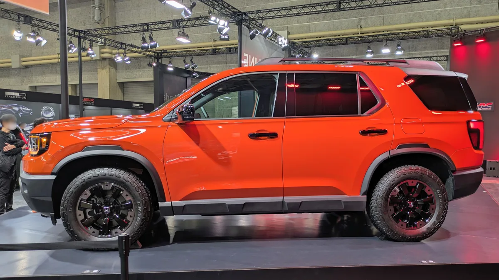

▲ 2026년형 혼다 패스포트 트레일스포트. 5만 달러 오프로더 시장에서 4러너와 부딪힌다 ⓒ HJUdall, Wikimedia Commons (CC0)
5만 달러로 오프로더를 산다면 무엇을 고를 것인가.
미국 시장에서 이 질문의 답은 오랫동안 4러너였습니다. 그런데 혼다가 완전히 새로 만든 패스포트가 같은 구간에 들어왔습니다.
두 차의 성격을 가르는 숫자는 접근각입니다. 23도와 33도. 10도 차이가 무엇을 의미하는지부터 봐야 합니다.
1. 접근각 10도 차이가 만드는 것
오프로드에서 차가 멈추는 이유는 대개 출력 부족이 아닙니다. 어딘가가 땅에 닿아서입니다.
접근각은 앞바퀴 접지점에서 앞 범퍼 아래 끝을 이은 각도입니다. 이 각도보다 가파른 언덕에 진입하면 범퍼가 먼저 땅에 닿습니다.
| 항목 | 혼다 패스포트 | 토요타 4러너 |
|---|---|---|
| 접근각 | 23° | 33° |
| 이탈각 | 23.1° | 24° |
| 지상고 | 8.3인치 (트레일스포트) | 10.1인치 (TRD 프로·트레일헌터) |
| 차체 구조 | 모노코크 | 보디 온 프레임 |
33도와 23도는 같은 등급의 숫자가 아닙니다. 4러너는 바위 턱을 정면으로 올라탈 수 있는 각도이고, 패스포트는 완만한 비포장 언덕까지입니다.
지상고 차이 1.8인치(약 46mm)도 마찬가지입니다. 바퀴 자국이 깊게 팬 임도에서 하부가 걸리느냐 마느냐가 이 범위에서 갈립니다.
차체 구조는 더 근본적인 차이입니다. 4러너는 보디 온 프레임으로, 사다리 모양 프레임 위에 차체를 얹습니다. 비틀림에 강하고 수리가 쉽습니다. 패스포트는 모노코크로, 승차감과 실내 공간에 유리합니다.

▲ 4러너는 보디 온 프레임 구조다. 접근각 33도로 바위 턱을 정면으로 올라탈 수 있다 ⓒ HJUdall, Wikimedia Commons (CC0)
2. 엔진 — 마력은 비슷한데 토크가 다르다
출력만 보면 큰 차이가 없어 보입니다. 285마력과 278마력입니다.
| 항목 | 패스포트 | 4러너 | 4러너 하이브리드 |
|---|---|---|---|
| 엔진 | 3.5L V6 | 2.4L 터보 I-4 | 2.4L 터보 하이브리드 |
| 출력 | 285마력 | 278마력 | 326마력 |
| 토크 | 262lb-ft | 317lb-ft | 465lb-ft |
| 변속기 | 10단 자동 | 8단 자동 | 8단 자동 |
갈리는 것은 토크입니다. 262 vs 317lb-ft. 하이브리드는 465lb-ft까지 갑니다.
오프로드와 견인에서 중요한 것은 마력이 아니라 저회전 토크입니다. 바위를 기어오를 때는 엔진을 높게 돌릴 수 없기 때문입니다.
다만 패스포트의 V6에도 장점이 있습니다.
- 자연흡기의 선형성 — 스로틀 조작에 즉각 반응한다. 미끄러운 노면에서 제어가 쉽다.
- 열 관리 — 터보 대비 장시간 부하에서 유리한 면이 있다
- 10단 변속기 — 기어 간격이 촘촘해 포장도로 주행이 매끄럽다
연비는 4러너 쪽이 근소하게 낫습니다. 패스포트 20~21mpg, 4러너 21~22mpg, 하이브리드 23mpg입니다. 큰 차이는 아닙니다.

▲ 패스포트의 3.5리터 V6는 혼다의 대형 SUV 계열이 오래 써온 자연흡기 엔진이다
3. 가격 — 시작은 4러너가 싸고, 끝은 훨씬 비싸다
가격 구조가 두 브랜드의 전략을 드러냅니다.
| 혼다 패스포트 | 가격 | 토요타 4러너 | 가격 |
|---|---|---|---|
| RTL | $44,950 | SR5 | $42,270 |
| RTL Towing | $45,650 | TRD Sport | $48,750 |
| TrailSport | $48,650 | TRD Off-Road | $50,690 |
| TrailSport Elite | $52,650 | Limited | $56,900 |
| TrailSport Elite Blackout | $53,850 | TRD Pro | $68,600 |
4러너는 4만2,270달러에서 시작해 6만8,600달러까지 올라갑니다. 폭이 2만6,000달러가 넘습니다.
패스포트는 4만4,950달러에서 5만3,850달러로 훨씬 좁습니다.
이 차이가 의미하는 것은 이렇습니다. 4러너는 기본형 실용 SUV부터 본격 오프로더까지를 한 이름으로 덮습니다. 패스포트는 중간 구간에 집중합니다.
5만 달러 언저리에서는 두 차가 정면으로 부딪힙니다. 패스포트 트레일스포트(4만8,650달러)와 4러너 TRD 오프로드(5만690달러)가 그 지점입니다.

▲ 패스포트는 4만4,950~5만3,850달러로 가격 폭이 좁다. 중간 구간에 집중한 구성이다 ⓒ Aos.1905, Wikimedia Commons (CC BY-SA 4.0)
4. 신뢰성과 결론
NHTSA 기준 리콜·불만 건수는 이렇습니다.
- 패스포트 — 리콜 1건, 불만 52건, J.D. 파워 82/100
- 4러너 — 2026년형 기준 리콜 1건, 불만 7건
불만 건수 차이가 큽니다. 다만 판매량과 출시 시점이 다르면 단순 비교가 어렵습니다. 절대 수치보다 경향으로 읽는 편이 맞습니다.
선택 기준을 정리하면 이렇습니다.
4러너를 고를 이유
- 실제로 험로를 탄다 — 접근각 33도, 지상고 10.1인치, 보디 온 프레임
- 견인을 자주 한다 — 토크가 크고 프레임 구조가 유리하다
- 오래 탈 계획이다 — 부품 수급과 정비 접근성이 넓다
패스포트를 고를 이유
- 대부분 포장도로를 탄다 — 모노코크의 승차감과 정숙성이 낫다
- V6의 부드러운 반응을 원한다 — 10단 변속기와의 조합이 매끄럽다
- 가격 폭이 좁은 편이 편하다 — 트림 고민이 단순하다
한 줄로 줄이면 이렇습니다. 한 대는 편안하고, 한 대는 부러지지 않습니다.
▲ 패스포트는 모노코크 구조로 승차감과 정숙성에서 유리하다 ⓒ Aos.1905, Wikimedia Commons (CC BY-SA 4.0)
5. 정리
2026년형 혼다 패스포트는 3.5리터 V6 285마력·262lb-ft에 10단 자동, 토요타 4러너는 2.4리터 터보 278마력·317lb-ft에 8단 자동입니다. 4러너 하이브리드는 326마력·465lb-ft입니다.
오프로드 수치는 지상고 8.3인치 vs 10.1인치, 접근각 23° vs 33°로 갈립니다. 차체는 모노코크 vs 보디 온 프레임입니다.
가격은 4러너 SR5 4만2,270달러가 가장 낮고 TRD 프로 6만8,600달러가 가장 높습니다. 패스포트는 4만4,950~5만3,850달러입니다. 본격 험로는 4러너, 포장도로 위주라면 패스포트가 합리적입니다.